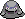

寶可夢 Wonderful
百科
繁中・非官方
原文
開始遊戲
首頁
指南
寶可夢
道具
招式
地圖
活動
道館與聯盟
系統
果園
經濟
公會
更新
常見問題
首頁
›
道館與聯盟
› 道館・阿桔
阿桔
Koga
徽章
粉紅徽章（5/8）
屬性
毒
地點
淺紅道館
條件
之前的 4 枚徽章
獎勵
賞金 4,500（再戰 2,250）
王牌
Lv 51
建議最低等級
Lv 36+
隊伍
寶可夢
等級
完美個體值項數
招牌招式
攜帶
瓦斯彈
47
3
-
-
大嘴蝠
48
3
-
-

臭臭泥
48
3
-
-
摩魯蛾
49
3
-
-
雙彈瓦斯
51
4
劇毒
毒針

 瓦斯彈
瓦斯彈 大嘴蝠
大嘴蝠 摩魯蛾
摩魯蛾 雙彈瓦斯
雙彈瓦斯